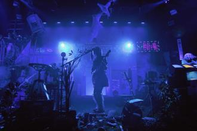

Jazz: Originating in the African-American communities of New Orleans, jazz is known for its swing and blue notes, complex chords, and improvisation.
Rock: Emerging in the 1950s, rock music is characterized by a strong beat, simple chord progressions, and lyrics that often revolve around love, rebellion, and social issues.
Classical: Spanning over a thousand years of music, classical music is known for its rich orchestration, structural complexity, and emotional depth.

Pop: Spanning various genres and eras, popular music is defined by its mass appeal, catchy melodies, and relatable lyrics, often reflecting the cultural zeitgeist and evolving with technological advancements in music production.